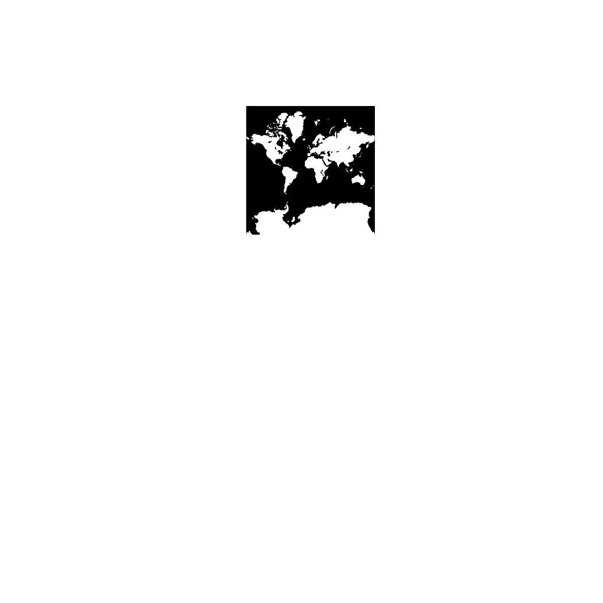
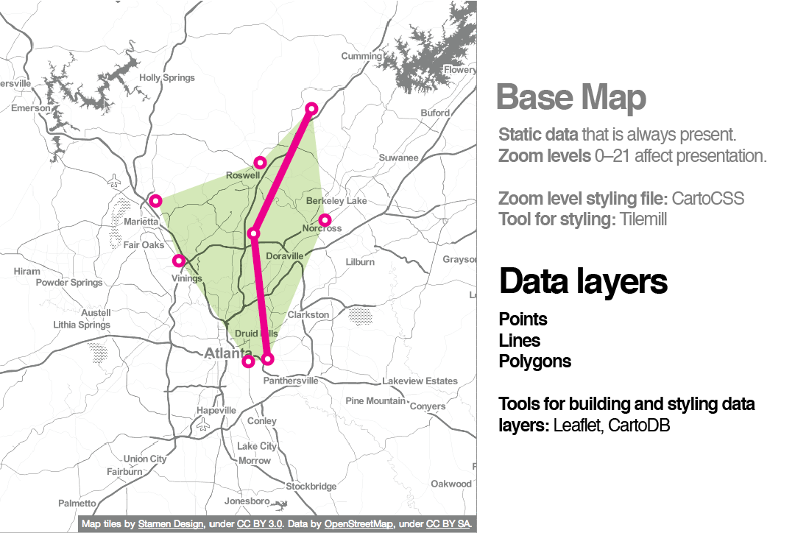
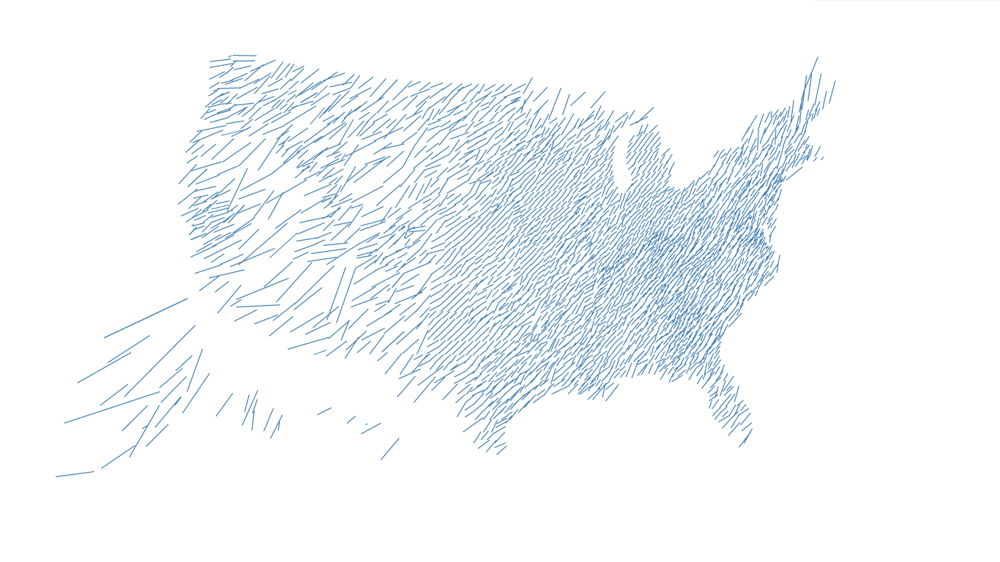
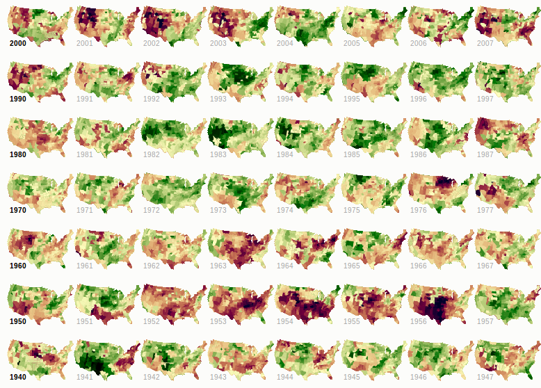

Anatomie d'une carte web
Maintenance !
Source ici :
sta.mn/qhg.
Les liens sont sur fond bleu, le
vert met en relief. Vous pouvez commenter et modifier sur
github !
Allez, c'est parti ! :)
Nous allons parler des principes de bases de la cartographie web.
Nous commencerons par un petit historique, pour que vous compreniez comment les cartes web sont devenues ce quelles sont aujourd'hui.
Il y a toujours des exceptions ! Nous en parlerons également.
Nous parlerons beaucoup de Google, mais nous allons aussi vous montrer une solution 100% ouverte sans Google
Tout d'abord, quel rapport entre l'anatomie et une carte web ?
Et bien,
Les corps et les cartes web possèdent des composants et des systèmes qui interagissent et s'entrelacent
Au lieu des cellules, les cartes sont constituées de données.
Au lieu de systèmes digestif, circulatoire ou nerveux, les cartes web sont basées sur des styles, des tuiles et des serveurs.
!!!
Donc,
Qu'est ce qu'une carte web ?
Pour répondre à cette question, peut-être est-ce plus utile de demander...
En quoi une carte web diffère d'une carte numérique ?
Numérique : implique un ordinateur, mais pas nécessairement accessible par internet.
Une carte web est une carte numérique. Et toutes deux sont bien sûr très différentes des cartes analogiques, telles que les cartes papier et les atlas !
Nous parlons des cartes web que vous voyez dans un navigateur, comme...

Faire des cartes pour les
objets mobiles peut être très similaire, mais nous ne parlerons pas de cela aujourd'hui.

Nous ne parlerons pas non plus des
globes numériques comme
Google Earthbon...
Voici une petite histoire :
Comment sont arrivées les cartes web ?

D'abord, il y avait des cartes numériques comme
ArcGIS.
Quoiqu'utile, un SIG pour le Web n'est pas très convivial :(

En 1996, MapQuest lance son premier service web.
tada !
Des indications ! En ligne ! Révolutionnaire !
Le problème ? C'était trop lent à charger :(
MapQuest imposait un rafraîchissement complet de la page pour faire défiler ou zoomer, et il était toujours aligné sur les limites de tuiles.
Début 2005, Google Maps a vraiment ouvert la voie à la cartographie web.
Mais où était la révolution ?
Était-ce dans l'interface ?
Le repère rouge ?
L'encart pour la météo ?
Non !
C'était la
tuile. 
Parlons un peu des tuiles. Et pour ce faire, empruntons un peu de matériel à l'incroyable cartographe
Lyzi Diamond qui possède un paquet d'informations sur les tuiles de
Mapbox.
Toutes les tuiles
=
même taille ! 256x256 pixels
mêmes limites

Les tuiles peuvent être une carte routière, une image satellite, ou n'importe quelle image matricielle !

Toutes ces petites tuiles se chargent
bien plus vite qu'une seule grande carte.
Les cartes web comme celle-là chargent les tuiles qui s'affichent sur votre écran. Si la carte est “intelligente”, elle préchargera les tuiles situées autour de l'écran.

Ce type de carte est communément appelée une
carte glissanteChaque niveau de zoom a son propre jeu de tuiles !
Zoom niveau 0 : une tuile unique pour le monde.
A chaque niveau de zoom supplémentaire, le nombre de tuiles augmente de façon exponentielle.
 Zoom niveau 1: 4 tuiles pour le monde.
Zoom niveau 1: 4 tuiles pour le monde. Zoom niveau 2, 3, 4, 5
Zoom niveau 2, 3, 4, 5 Zoom niveau 13
Zoom niveau 13Les tuiles sont rendues à l'avance (généralement) puis stockées dans un cache
Les tuiles des cartes sont de simples images en ligne, vous pouvez pointer dessus individuellement.
Pour comprendre comment ça fonctionne, décomposons l'URL.
http://tile.openstreetmap.org/4/2/6.png -- le nom du serveur de tuiles.
http://tile.openstreetmap.org/4/2/6.png -- z, le niveau de zoom.
http://tile.openstreetmap.org/4/2/6.png -- x/y, la position de la tuile sur la grille.
Google Maps utilise la projection Mercator, conçue pour la navigation maritime MAIS qui convient bien pour les cartes plates.
Nous verrons d'autres projections plus tard...!
Bref, toutes les autres cartes glissantes et les logiciels associés ont adopté la solution de Google à base de tuiles.
Sans surprise, une collection de tuiles matricielles constitue ce qu'on appelle la couche de base d'une carte.
Lorsqu'on ajoute des éléments par-dessus, on parle de couche de données, couche de contenu ou couche de fonctionnalités.
*(Toutes les cartes web ne possèdent pas de couche de contenu, mais elles sont assez courantes.)
Il s'agit généralement de couches vectorielles (des points, des lignes, des polygones). Parfois elles sont interactives (un clic peut faire surgir une fenêtre par exemple).
Types de fichiers : les SIG utilisent des
fichiers de formes, mais les cartes web préfèrent le
KML, ou plus récemment le
GeoJSONVoici comment ces pièces s'assemblent :

Compris ?
Super !
Nous pouvons donc plonger un peu plus profond dans l'anatomie d'une carte web !
Que fait la bibliothèque javascript ? Elle s'empare des tuiles, ajoute la couche de contenu, gère l'interaction.
3 exceptions à cette histoire simplifiée !
Exception n°1 : Les tuiles sont toujours matricielles SAUF quand elles ne le sont pas !
Les
tuiles vectorielles sont une alternative à une base de donnée qui fabrique des tuiles matricielles. Elles sont tout de même rendues sous forme matricielle pour l'affichage
Matriciel : je demande les données à placer sur la tuile
Vectoriel : j'ai déjà les données vectorielles, découpées pour fabriquer des tuiles matricielles
Donc quelqu'un doit parcourir et hacher ces données, par exemple
MapBox.
Exception n°2 : Pas d'interaction possible sur une image matricielle. MAIS
UTFGrid (une création Mapbox) la rend possible.

UTFGrid est une couche invisible de lettres qui servent d'index dans les données cliquables
Exception n°3 :
D3 existe en-dehors du monde des tuiles
Vous ne pouvez pas facilement faire une carte routière en D3 MAIS vous pouvez faire des choses périlleuses sur des cartes glissantes, comme...

Différentes projections cartographiques (dans le navigateur !)
sta.mn/jfsD3

EST

DÉ
MENT
Très puissant, mais une courbe d'apprentissage un peu raide
Bien.
Concrètement, par où je commence ?
Ai-je besoin de tuiles personnalisées ?
Oui ? Utilisez
TileMill pour dessiner vos propres tuiles.
 Joli !
Joli !Vous pouvez héberger ces tuiles sur
MapBox, ou...
Ai-je besoin d'une couche de contenu ?
Non ? Mettez toutes vos données dans les tuiles, en utilisant éventuellement UTFGrid pour l'interactivité
Oui ? Convertissez votre fichier de formes en GeoJSON avec
OGRE ou écrivez votre propre GeoJSON avec
geojson.ioSinon,
CartoDB gère presque tout ça pour vous !
Remerciements :
Vous !
Présentation faite avec
big


 La carte web la plus simple possible : sta.mn/v5h
La carte web la plus simple possible : sta.mn/v5h

 Stamen a utilisé cette technique sur la carte des parcs naturels préservés.
Stamen a utilisé cette technique sur la carte des parcs naturels préservés.

 En savoir plus :
En savoir plus :{kind=link}